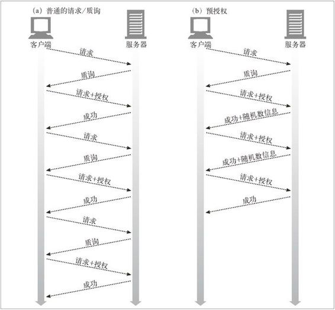

13.2 摘要的计算
摘要认证的核心就是对公共信息、保密信息和有时限的随机值这个组合的单向摘要。现在我们来看看这些摘要是如何计算出来的。摘要计算通常都是简单易懂的。1 附录 F 提供了示例源代码。
1 但对初学者来说，可选的 RFC 2617 兼容模式以及规范中背景资料的缺乏，使其变得有些复杂。我们会努力提供一些帮助。
13.2.1 摘要算法的输入数据
摘要是根据以下三个组件计算出来的。
由单向散列函数 H( d) 和摘要 KD( s, d) 组成的一对函数，其中 s表示密码，d表示数据。
一个包含了安全信息的数据块，包括密码，称为 A1。
一个包含了请求报文中非保密属性的数据块，称为 A2。
H 和 KD 处理两块数据 A1 和 A2，产生摘要。
13.2.2 算法H( d)和KD( s, d)
摘要认证支持对各种摘要算法的选择。RFC 2617 建议的两种算法为 MD5 和 MD5-sess（“sess”表示会话），如果没有指定其他算法，默认算法为 MD5。
不管使用的是 MD5 还是 MD5-sess，都会用函数 H 来计算数据的 MD5，用摘要函数 KD 来计算以冒号连接的密码和非保密数据的 MD5。例如：
H(<data>) = MD5(<data>)
KD(<secret>,<data>) = H(concatenate(<secret>:<data>))
13.2.3 与安全性相关的数据（A1）
被称为 A1 的数据块是密码和受保护信息的产物，它包含有用户名、密码、保护域和随机数等内容。A1 只涉及安全信息，与底层报文自身无关。A1 会与 H、KD 和 A2 一同用于摘要计算。
RFC 2617 根据选择的算法定义了两种计算 A1 的方式。
MD5
为每条请求运行单向散列函数。A1 是由冒号连接起来的用户名、域以及密码三元组。
MD5-sess
只在第一次 WWW-Authenticate 握手时运行一次散列函数。对用户名、域和密码进行一次 CPU 密集型散列，并将其放在当前随机数和客户端随机数（cnonce）的前面。
表 13-2 显示了 A1 的定义。
表13-2 算法对A1的定义
| 算法 | A1 |
|---|---|
| MD5 | A1 = <user>:<realm>:<password> |
| MD5-sess | A1 = MD5(<user>:<realm>:<password>):<nonce>:<cnonce> |
13.2.4 与报文有关的数据（A2）
数据块 A2 表示的是与报文自身有关的信息，比如 URL、请求方法和报文实体的主体部分。A2 有助于防止方法、资源或报文被篡改。A2 会与 H、KD 和 A1 一起用于摘要的计算。
RFC 2617 根据所选择的保护质量（qop），为 A2 定义了两种策略。
第一种策略只包含 HTTP 请求方法和 URL。当 qop="auth" 时使用这种策略，这是默认的情况。
第二种策略添加了报文实体的主体部分，以提供一定程度的报文完整性检测。qop="auth-int" 时使用。
表 13-3 显示了 A2 的定义。
表13-3 算法对A2的定义（请求摘要）
| qop | A2 |
|---|---|
| 未定义 | <request-method>:<uri-directive-value> |
| auth | <request-method>:<uri-directive-value> |
| auth-int | <request-method>:<uri-directive-value>:H(<request-entitybody>) |
request-method 是 HTTP 的请求方法。uri-directive-value 是请求行中的请求 URI。可能是个 "*"、absoluteURL 或者 abs_path，但它必须与请求 URI 一致。尤其需要注意的是，如果请求 URI 是 absoluteURL，它必须是个绝对 URL。
13.2.5 摘要算法总述
RFC 2617 定义了两种给定了 H、KD、A1 和 A2 之后，计算摘要的方式。
第一种方式要与老规范 RFC 2069 兼容，在没有 qop 选项的时候使用。它是用保密信息和随机报文数据的散列值来计算摘要的。
第二种方式是现在推荐使用的方式——这种方式包含了对随机数计算和对称认证的支持。只要 qop 为 auth 或 auth-int，就要使用这种方式。它向摘要中添加了随机计数、qop 和 cnonce 数据。
表 13-4 给出了得到的摘要函数定义。注意得到的摘要使用了 H、KD、A1 和 A2。
表13-4 新/老摘要算法
| qop | 摘要算法 | 备 注 |
|---|---|---|
| 未定义 | KD(H(A1), <nonce>:H(A2)) | 不推荐 |
| auth 或 auth-int | KD(H(A1), <nonce>:<nc>:<cnonce>:<qop>:H(A2)) | 推荐 |
这些派生封装层很容易把人弄晕。这也是有些读者觉得 RFC 2617 难懂的原因之一。为了简化，表 13-5 扩展了 H 和 KD 的定义，用 A1 和 A2 来表示摘要。
表13-5 展开的摘要算法备忘单
| qop | 算 法 | 展开的算法 |
|---|---|---|
| 未定义 | <undefined> MD5 MD5-sess | MD5(MD5(A1):<nonce>:MD5(A2)) |
| auth | <undefined> MD5 MD5-sess | MD5(MD5(A1):<nonce>:<nc>:<cnonce>:<qop>:MD5(A2)) |
| auth-int | <undefined> MD5 MD5-sess | MD5(MD5(A1):<nonce>:<nc>:<cnonce>:<qop>:MD5(A2)) |
13.2.6 摘要认证会话
客户端响应对保护空间的 WWW-Authenticate 质询时，会启动一个此保护空间的认证会话（与受访问服务器的标准根结合在一起的域就定义了一个“保护空间”）。
在客户端收到另一条来自保护空间的任意一台服务器的 WWW-Authenticate 质询之前，认证会话会一直持续。客户端应该记住用户名、密码、随机数、随机数计数以及一些与认证会话有关的隐晦值，以便将来在此保护空间中构建请求的 Authorization 首部时使用。
随机数过期时，即便老的 Authorization 首部所包含的随机数不再新鲜了，服务器也可以选择接受其中的信息。服务器也可以返回一个带有新随机数的 401 响应，让客户端重试这条请求；指定这个响应为 stale=true，表示服务器在告知客户端用新的随机数来重试，而不再重新提示输入新的用户名和密码了。
13.2.7 预授权
在普通的认证方式中，事务结束之前，每条请求都要有一次请求 / 质询的循环，参见图 13-4a。

图 13-4 预授权减少了报文的数量
如果客户端事先知道下一个随机数是什么，就可以取消这个请求 / 质询循环，这样客户端就可以在服务器发出请求之前，生成正确的 Authorization 首部了。如果客户端能在服务器要求它计算 Authorization 首部之前将其计算出来，就可以预先将 Authorization 首部发送给服务器，而不用进行请求 / 质询了。图 13-4b 显示了这种方式对性能的影响。
预授权对基本认证来说并不重要（而且很常见）。浏览器通常会维护一些客户端数据库以存储用户名和密码。一旦用户与某站点进行了认证，浏览器通常会为后继对那个 URL 的请求发送正确的 Authorization 首部（参见第 12 章）。
由于摘要认证使用了随机数技术来破坏重放攻击，所以对摘要认证来说，预授权要稍微复杂一些。服务器会产生任意的随机数，所以在客户端收到质询之前，不一定总能判定应该发送什么样的 Authorization 首部。
摘要认证在保留了很多安全特性的同时，还提供了几种预授权方式。这里列出了三种可选的方式，通过这些方式，客户端无需等待新的 WWW-Authenticate 质询，就可以获得正确的随机数：
服务器预先在 Authentication-Info 成功首部中发送下一个随机数；
服务器允许在一小段时间内使用同一个随机数；
客户端和服务器使用同步的、可预测的随机数生成算法。
1. 预先生成下一个随机数
可以在 Authentication-Info 成功首部中将下一个随机数预先提供给客户端。这个首部是与前一次成功认证的 200 OK 响应一同发送的。
Authentication-Info: nextnonce="<nonce-value>"
有了下一个随机数，客户端就可以预先发布 Authorization 首部了。
尽管这种预授权机制避免了请求 / 质询循环（加快了事务处理的速度），但实际上它也破坏了对同一台服务器的多条请求进行管道化的功能，因为在发布下一条请求之前，一定要收到下一个随机值才行。而管道化是避免延迟的一项基本技术，所以这样可能会造成很大的性能损失。
2. 受限的随机数重用机制
另一种方法不是预先生成随机数序列，而是在有限的次数内重用随机数。比如，服务器可能允许将某个随机数重用 5 次，或者重用 10 秒。
在这种情况下，客户端可以随意发布带有 Authorization 首部的请求，而且由于随机数是事先知道的，所以还可以对请求进行管道化。随机数过期时，服务器要向客户端发送 401 Unauthorized 质询，并设置 WWW-Authenticate:stale=true 指令：
WWW-Authenticate: Digest
realm="<realm-value>"
nonce="<nonce-value>"
stale=true
重用随机数使得攻击者更容易成功地实行重放攻击。虽然这确实降低了安全性，但重用的随机数的生存期是可控的（从严格禁止重用到较长时间的重用），所以应该可以在安全和性能间找到平衡。
此外，还可以通过其他一些特性使重放攻击变得更加困难，其中就包括增量计数器和 IP 地址测试。但这些技术只能使攻击的实施更加麻烦，并不能消除由此带来的安全隐患。
3. 同步生成随机数
还可以采用时间同步的随机数生成算法，客户端和服务器可根据共享的密钥，生成第三方无法轻易预测的、相同的随机数序列（比如安全 ID 卡）。
这些算法都超出了摘要认证规范的范畴。
13.2.8 随机数的选择
随机数的内容不透明，而且与实现有关。但性能、安全性和便捷性的优劣都取决于明智的选择。
RFC 2617 建议采用这个假想的随机数公式：
BASE64(time-stamp H(time-stamp ":" ETag ":" private-key))
其中 time-stamp 是服务器产生的时间或其他不会重复的值，ETag 是与所请求实体有关的 HTTP ETag 首部的值，private-key 是只有服务器知道的数据。
有了这种形式的随机数，服务器就可以在收到客户端的认证首部之后重新计算散列部分，如果结果与那个首部的随机数不符，或者时间戳的值不够新，就拒绝请求。服务器可以通过这种方式来限制随机数的有效持续时间。
包含 Etag 可以防止对已更新资源版本的重放请求。（注意，在随机数中包含客户端的 IP 地址，服务器好像就可以限制原来获得此随机数的客户端重用这个随机数了，但这会破坏代理集群的工作。使用代理集群时，来自单个用户的多条请求通常会经过不同的代理进行传输，而且 IP 地址欺骗实现起来也不是很难。）
实现可以选择不接受以前使用过的随机数或摘要，以防止重放攻击。实现也可以选择为 POST 或 PUT 请求使用一次性的随机数或摘要，为 GET 请求使用时间戳。
会影响到随机数选取的一些实际安全问题参见 13.5 节。
13.2.9 对称认证
RFC 2617 扩展了摘要认证机制，允许客户端对服务器进行认证。这是通过提供客户端随机值来实现的，服务器会根据它对共享保密信息的正确了解生成正确的响应摘要。然后，服务器在 Authorization-Info 首部中将此摘要返回给客户端。
这种对称认证方式被标准化为 RFC 2617。为了与原有 RFC 2069 标准后向兼容，它是可选的，但由于它提供了一些重要的安全提升机制，强烈推荐现今所有的客户端和服务器都要实现全部 RFC 2617 特性。特别是，只要提供了 qop 指令，就要求执行对称认证，而没有 qop 指令时则不要求执行对称认证。
响应摘要的计算方法与请求摘要类似，但由于响应中没有方法，而且报文实体数据有所不同，所以只有报文主体信息 A2 不同。表 13-6 和表 13-7 对比了请求和响应摘要中 A2 的计算方法。
表13-6 算法中A2的定义（请求摘要）
| qop | A2 |
|---|---|
| 未定义 | <request-method>:<uri-directive-value> |
| auth | <request-method>:<uri-directive-value> |
| auth-int | <request-method>:<uri-directive-value>:H(<request-entity-body>) |
表13-7 算法中A2的定义（响应摘要）
| qop | A2 |
|---|---|
| 未定义 | :<uri-directive-value> |
| auth | :<uri-directive-value> |
| auth-int | :<uri-directive-value>:H(<response-entity-body>) |
cnonce 值和 nc 值必须是本报文所响应的客户端请求中的相应值。如果指定了 qop="auth" 或 qop="auth-int"，就必须提供响应 auth、cnonce 和 nonce 计数指令。